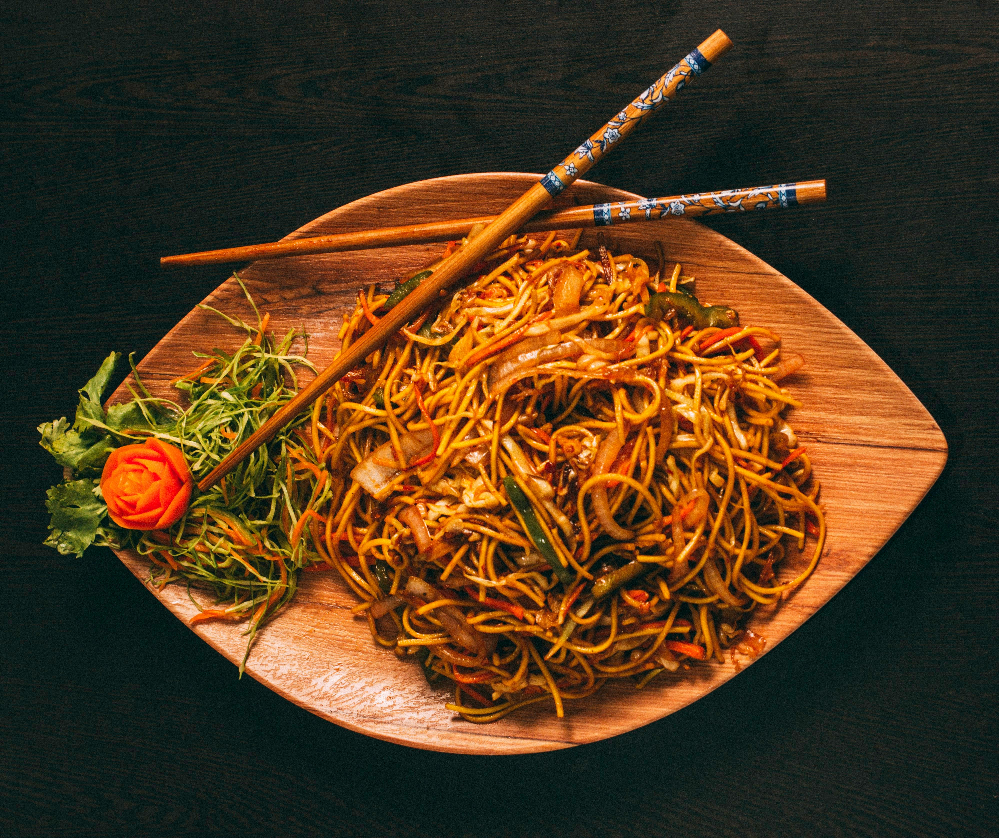

Vegetable Fried Noodles

Photo by
Orijit Chatterjee
on
Unsplash
Quick and Flavorful Noodle Dish
Fried noodles are a quick meal made with noodles, fresh vegetables, soy
sauce, and simple seasonings.
This recipe is perfect for a quick lunch or dinner.
Ingredients
- 200g noodles
- 1 carrot
- 1/2 cup cabbage
- 1/2 bell pepper
- 2 tablespoons soy sauce
- 1 tablespoon cooking oil
- 2 cloves garlic
- Salt to taste
Steps:
- Cook the noodles according to the package instructions.
- Heat oil in a large pan.
- Add garlic and chopped vegetables.
- Stir-fry the vegetables for several minutes.
- Add the cooked noodles.
- Add soy sauce and mix well.
- Cook for a few more minutes.
- Serve hot.